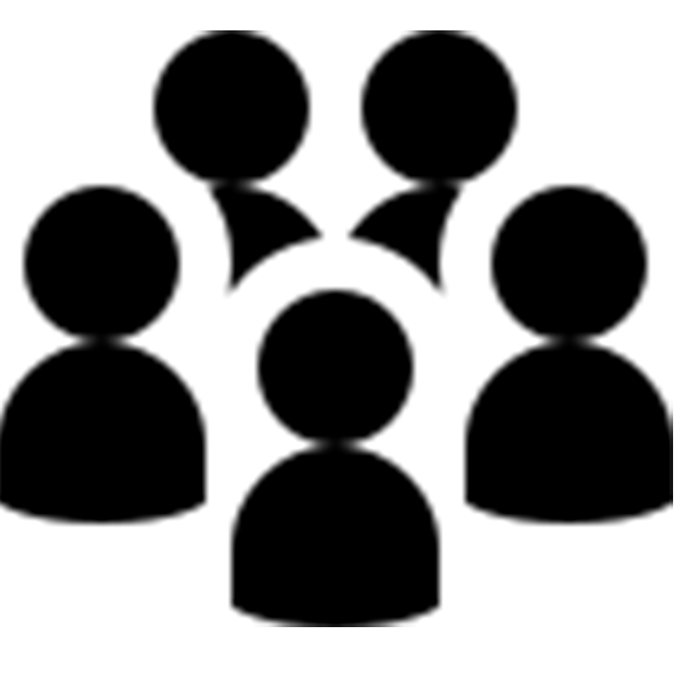

Praktische info
Er zijn twee opties: de foodtruck huren met service en de La Taquaria-taco's of enkel de foodtruck huren (zonder service of eten).
Optie 1: food + truck
Huwelijk
Onze foodtruck fleurt uw trouwfeest helemaal op. Als avondeten of als snack na al het dansen, aan u de keuze. Ook een pre-trouwfeestje aan het gemeentehuis of de kerk behoort tot de mogelijkheden. Verras familie en vrienden met onze foodtruck. Een hippe manier om je huwelijksdag in stijl te starten.
 Feest
Feest
Doet zoonlief zijn communie? Zijn jullie de gelukkige ouders van een nieuwe spruit en willen jullie de babyborrel extra speciaal maken? Wil je een origineel familiefeest, eens iets anders dan het buffet met opgevulde perziken? Onze foodtruck maakt elk feest onvergetelijk, van verjaardag tot vrijgezellen.
(Bedrijfs)evenement
Verwen je (potentiële) klanten door onze foodtruck te boeken op je evenement. Beloon je hardwerkende werknemers na weken vol deadlines met een avond streetfood of laat ons je hele personeelsfeest voorzien van trendy eten.
Optie 2: enkel de foodtruck huren
Aanwezig in de foodtruck
Heteluchtoven,
au bain-marie,
professionele friteuse,
braadplaat,
kookfornuis,
soepketels,
mogelijkheid tot stromend water,
meerdere koelkasten en verschillende opbergkasten
Praktisch
Ma, di & do: 250 euro/dag
Woe, vrij, za & zo: 350 euro/dag
Weekend (za & zo): 600 euro
Lang weekend (vrij, za & zo): 850 euro
Lang weekend (Za, zo & ma): 750 euro
Prijzen zijn exclusief waarborg en kilometervergoeding.
Op maat gemaakte voorstellen zijn ook mogelijk.